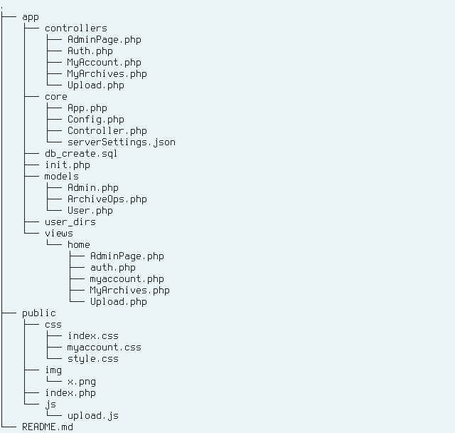
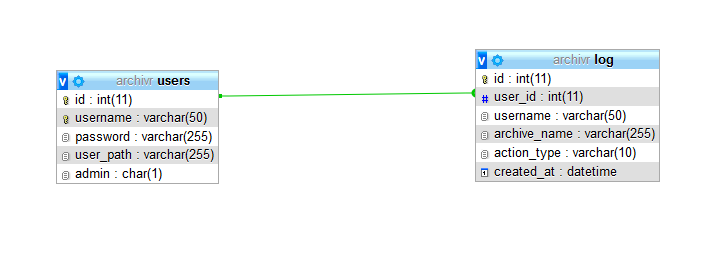
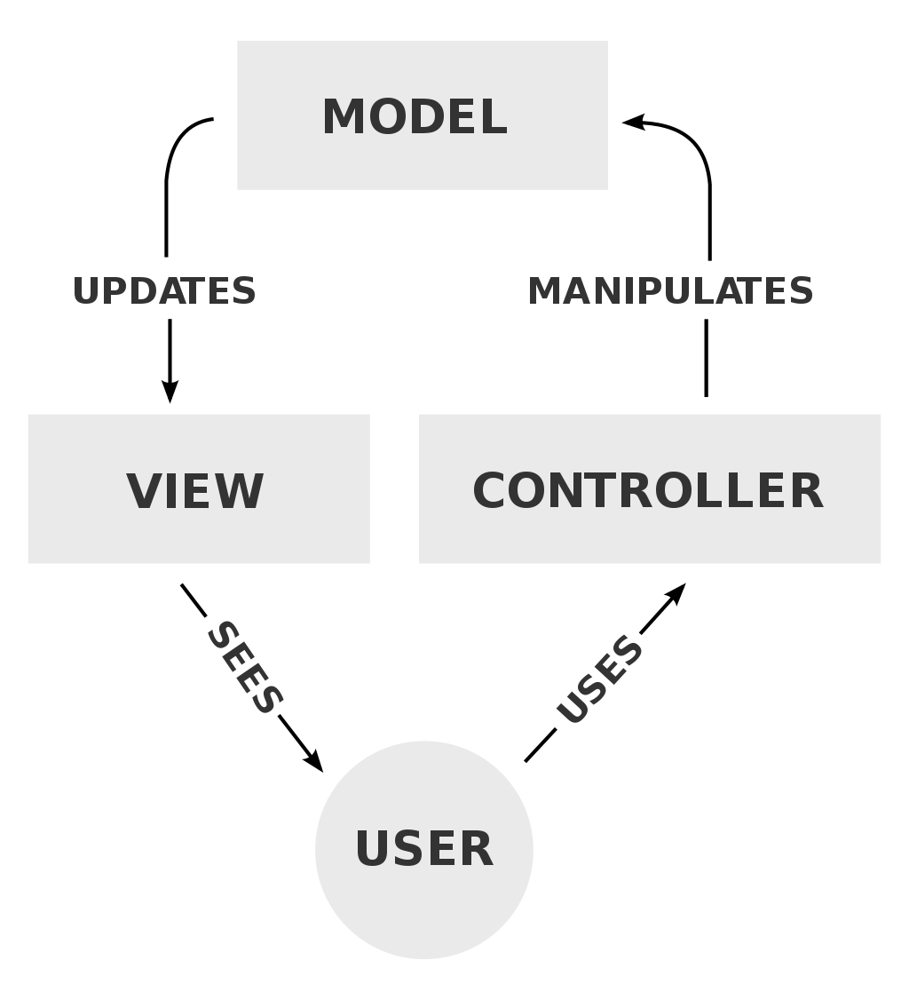
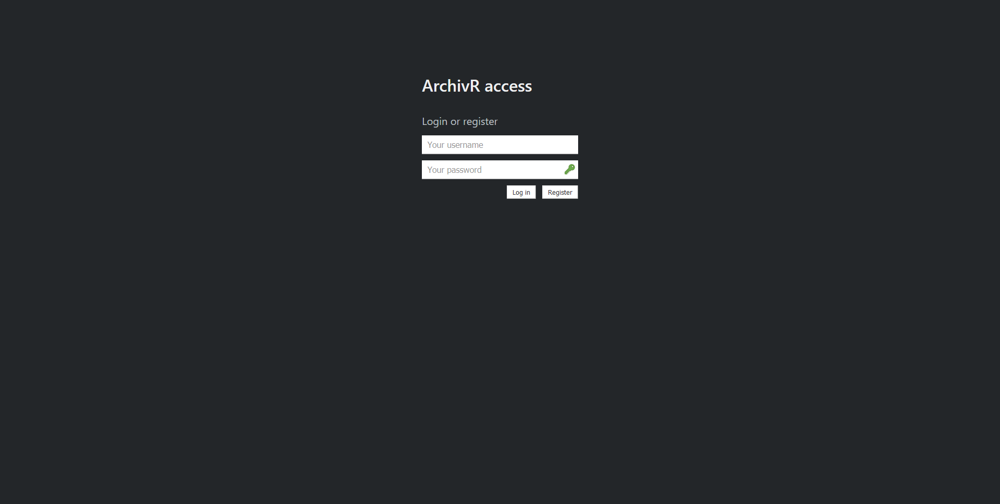
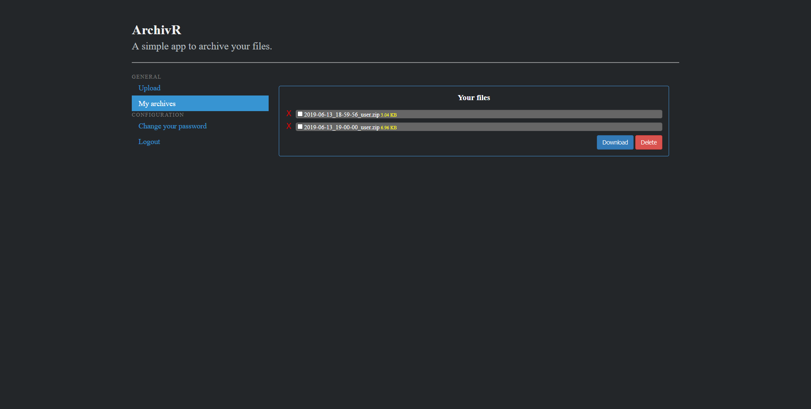
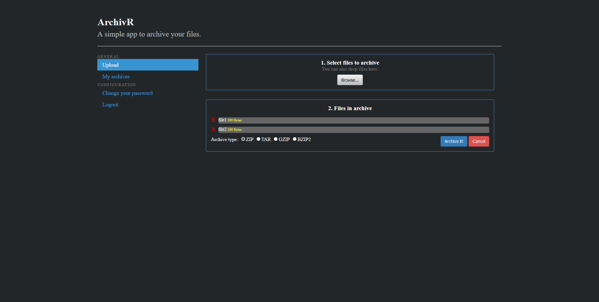
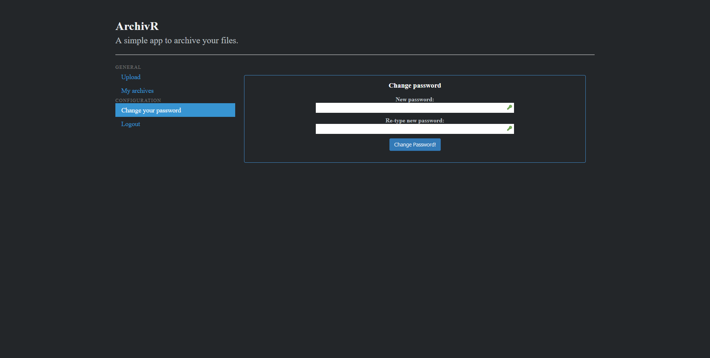
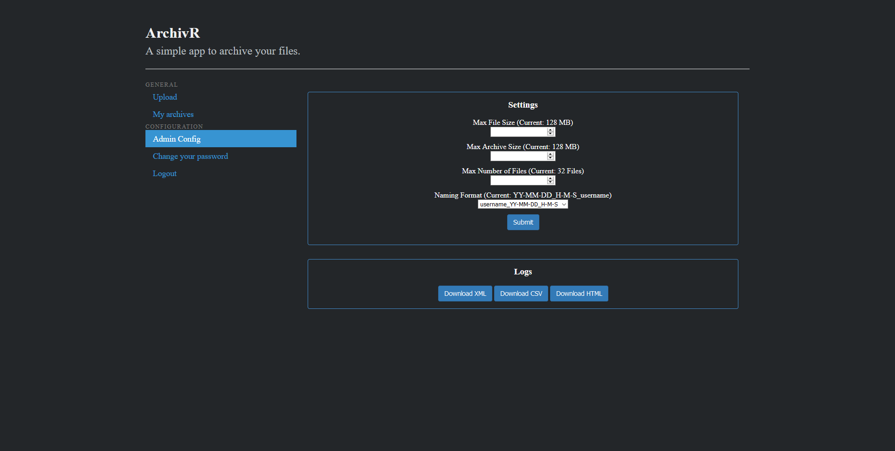
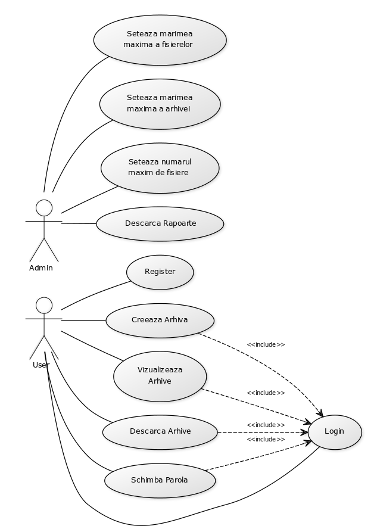

Agarafine Beniamin Andrei
&
Paunescu Andrei-Alexandru
Introducere
Aplicatie online de arhivare a fisierelor, dar si de gestionare a arhivelor creeate.
Aplicatia are urmatoarele caracteristici:
Utilizatorii pot arhiva diferite fisiere.
Utilizatorii pot alege tipul arhivei creeate.
Utilizatorii isi pot gestiona arhivele creeate.
Tehnologii
Tehnologiile folosite in creearea acestei aplicatii sunt afisate mai jos.
HTML
HyperText Markup Language (HTML) este un limbaj de marcare utilizat pentru crearea paginilor web ce pot fi afisate intr-un browser (sau navigator).
Scopul HTML este mai degraba prezentarea informatiilor – paragrafe, fonturi, tabele s.a.m.d. – decat descrierea semanticii documentului.
CSS
CSS (Cascading Style Sheets) este un standard pentru formatarea elementelor unui document HTML.
Stilurile se pot atașa elementelor HTML prin intermediul unor fisiere externe sau direct in cadrul documentului html.
JavaScript
JavaScript (JS) este un limbaj de programare orientat obiect bazat pe conceptul prototipurilor.
Este folosit mai ales pentru introducerea unor funcționalitati în paginile web,
codul JavaScript din aceste pagini fiind rulat de catre browser.
PHP
PHP este un limbaj de programare. Numele PHP provine din limba engleza si este un acronim recursiv: Php: Hypertext Preprocessor.
Folosit initial pentru a produce pagini web dinamice, este folosit pe scara larga in dezvoltarea paginilor si aplicatiilor web.
Se foloseste în principal inglobat in codul HTML.
MySQL
MySQL este un sistem de gestiune a bazelor de date relationale.
GitHub
GitHub este un serviciu de gazduire web pentru proiecte de dezvoltare a software-ului care utilizeaza sistemul de control al versiunilor Git.
Arhitectura aplicatiei
Structura generala a aplicatiei

Structura aplicatiei
Structura bazei de date
Arhivele utilizatorilor vor fi stocate pe server, intr-un director special facut cu numele acestuia.
In baza de date este stocat pentru fiecare utilizator path-ul folderului acestuia.

Schema bazei de date
MVC
Aplicatia se va baza pe design pattern-ul MVC (Model View Controller).

Schema MVC
Fiecare pagina solicitata va avea trei componente:
Componenta View:
ー Aceasta componenta are ca scop doar afisarea paginii catre utilizatori.
Componenta Model:
ー Aceasta componenta are ca scop gestionarea interna a aplicatiei.
ー Prin aceasta componenta se vor face modificari asupra aplicatiei. Spre exemplu modificari asupra bazei de date sau diferite calcule.
Componenta Controller:
ー Prin aceasta componenta se face legatura dintre componentele Model si View.
ー Aceasta componenta, prin datele primite de la Model, decide ce date sa trimita la View.
Mod de utilizare
Mai jos este descris un scenariu normal de utilizare a aplicatie.
Login/Register
Utilizatorii, odata ce acceseaza aplicatia isi pot creea un cont nou, sau, daca au deja un cont creeat se pot loga.

Pagina de autentificare
MyArchives
Utilizatorii, odata ce au fost logati cu success vor fi trimisi pe pagina MyArchives unde isi vor putea gestiona arhivele creeate.

Pagina de gestionare arhive
Upload
In aceasta pagina, utilizatorii pot sa creeze arhive noi de diferite tipuri.

Pagina de upload al fisierelor
Change your password
In aceasta pagina, utilizatorii isi pot schimba parola contului.

Pagina de schimbare a parolei
Admin config
Utilizatorii autentificati cu un utilizator cu drepturi de administrator au access,
pe langa cele mentionate mai sus, la o pagina noua in care este posibila stabilirea
a diversi parametrii, dar si descarcarea de log-uri, in diferite formate(HTML, XML, CSV).

Pagina de configurare
Diagrama Use Case

Diagrama Use Case
Dezvoltare
Aplicatia a fost dezvoltata in mai multe etape.
Dezvoltare front-end:
ー Creeare de pagini statici HTML.
ー Creeare de fisiere css folosite de HTML.
Dezvoltarea bazei de date:
ー Creearea de tabele in baza de date.
Implementarea functionalitatii aplicatiei:
ー Implementarea functionalitatilor butoanelor, implementarea unui sistem de login, etc.